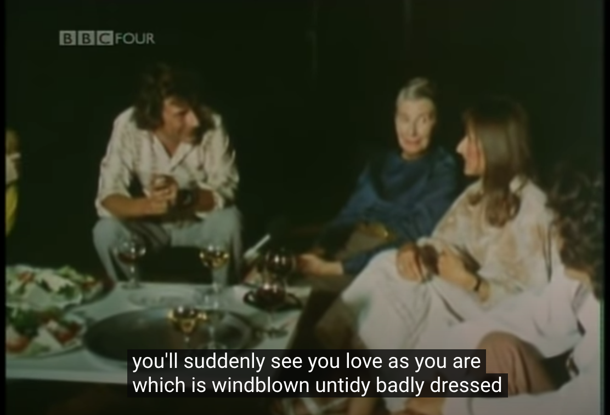
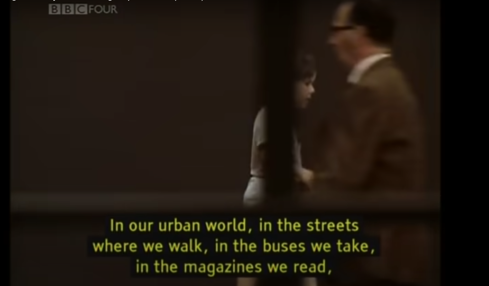

John Berger offered an interesting take on the influences of images, namely paintings and, later on, digital pictures, and the many ways that one can interpret or "see" them. He displays many factors that go into how a viewer may portray an image, from different texts displayed around the image to even invoking other senses by, for example, playing music while viewing it. What I found most interesting about this series was viewing his take on classical paintings from the scope of the 1970s, as this was his present day. It was somewhat, although not entirely, surprising to see both the vintage-style of television programs that I am not used to, as well as many of the out-dated, anti-progressive perspectives taken throughout it.
My favorite part of this series was seeing the panel of women, where a number of women spoke on their views of these classical painting and their effects on society. They offered a view of these effects as a whole as well as how they impacted their own lives, both implicitly and explicitly, as women in the 1970s
In connecting these thoughts into the modern uses of pictures within advertisements and the media, he showed how these portrayals ultimately stayed consistent from the classical periods of art to the digitalized ages. I also found it noteworthy that even though his program was made during the relatively current age of technology, so much has changed within the last 50 years since it had aired. And while the similarities are still clearly visible, I enjoyed being able to compare the progress made regarding how women were viewed in society at the time this was made to now.
